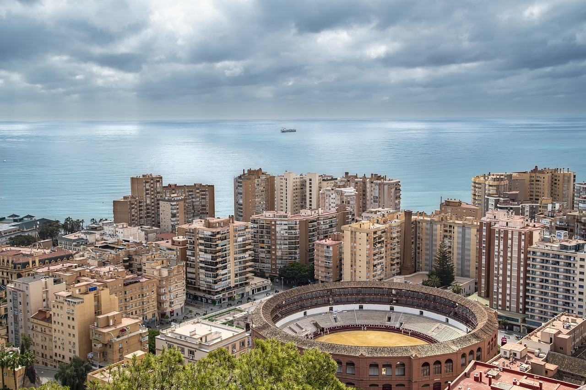
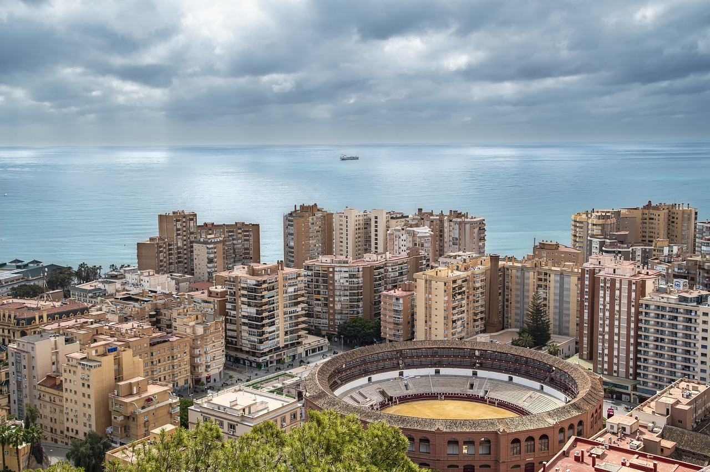

1. The Alcazaba is probably the most well-known tourist attraction in Malaga. Built in the 11th century by the Moors, this palace was both the home of Muslim rulers and a fortress to protect and defend the city from the Catholics. The site is very well preserved and maintained. During your visit you’ll discover the courtyards, patios, fountains and sumptuous gardens. As it’s built on a hill overlooking Malaga, it offers a lovely view over the sea and port. There’s also a small archaeological museum showcasing Moorish pottery and ceramics.
2.Another place you must visit in Malaga is Gibralfaro castle. From the Alcazaba, you can go to the castle on foot via a path offering great views over the city. It is however a bit steep, so if you prefer, you can take the bus #35 from the Avenida de Cervantes to go there. The castle was built in the 14th century to protect the Alcazaba. It had a barrack to house soldiers, as well as a lighthouse. That’s actually where the castle got its name from: Gibralfaro means “mountain of light”. There is a building right at the entrance to learn more about the history of the castle, but the visit is mainly worth it for the view over Malaga and the sea from the ramparts. On clear days it’s even possible to see the Strait of Gibraltar. It’s the best scenic view over the Malaga, and it’s also very nice at night with all the city lights.
3. Another great thing to do in Malaga is to visit the Roman theater located at the bottom of the Alcazaba. It’s the oldest site in Malaga: it was built in the first century AD by Augustus and was used as a theater during the 2nd century. Then, it was converted into a cemetery to finally be abandoned. Some of the rocks from this site were used to build the Alcazaba. The Roman theater ruins were only discovered in 1951, when the building that was built on top was destroyed. Nowadays, many outdoor performances are taking place there. Entrance is free. Don’t forget that if you book a guided tour of the Alcazaba here, it also includes a guided visit to the Roman theatre.
4.The cathedral is one of the best places to visit in Malaga. It’s one of the tallest in Andalucia, you can see it from far away! Construction work started in the 16th century, on the foundations of the city’s old mosque. Construction lasted for 200 years, and got suddenly halted because of a lack of funding. As a result, the cathedral was never completely finished, and has only one bell tower (whereas 2 were planned to be build). Locals even call it “La Manquita” (meaning the armless one). You can climb the 200 steps to go up the 87 meters high tower: you’ll be able to enjoy a 360° scenic view over the whole city, the Alcazaba and Gibralfaro castle. Don’t miss out on the interiors either to see the decorated ceiling, the beautiful stained-glass windows, the chapels or even the 4000 pipes organ.
5.Let’s continue this guide of Malaga with Atarazanas market. When you travel somewhere, whether it’s in Spain, Sicilia or even Greece, the market is always the best place to get some delicious local products. In Malaga, I recommend going to the Atrazanas market. This covered market is located in a stunning 19th century building with colorful stained-glass windows. It’s a very vibrant place with plenty of fresh produces stalls, Spanish cured meat and cheese. You’ll also find tapas bars close to the main entrance, a nice way to try all these fresh and tasty products! The market is open Monday to Saturday, from 8:00 to 14:00. It is closed on Sunday.
 
